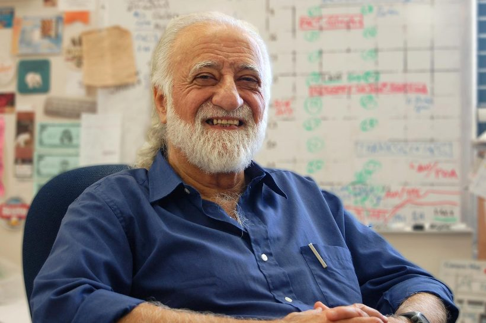

Yale N. Patt, Teksas Üniversitesi'nde (UT Austin) Elektrik ve Bilgisayar Mühendisliği profesörüdür. Bilgisayar mimarisi alanında bir efsane olarak kabul edilir. Dallanma tahmini (branch prediction) ve komutların sırasız yürütülmesi (out-of-order execution) üzerine yaptığı araştırmalar, günümüz mikroişlemcilerinin gelişiminde önemli rol oynamıştır.
Aynı zamanda Sanjay J. Patel ile birlikte, dünya çapında 100'den fazla üniversitede ders kitabı olarak kullanılan Introduction to Computing Systems: From Bits and Gates to C and Beyond kitabının yazarıdır.
Türk okurlarımız onu Onur Mutlu'nun doktora danışmanı olarak da tanıyor olabilir.
Bilgisayar Mimarisi dersini aldığım Dr. Patt ile odasında bir araya gelip söyleşi yapma fırsatı buldum. Eğitim anlayışından günümüz yapay zekâ teknolojilerine kadar pek çok konuyu konuştuk. Umarım siz de bu söyleşiyi okurken en az benim kadar keyif alırsınız.
Söyleşi 18 Kasım 2026'da Austin, Teksas'ta gerçekleştirildi.

Taylan
Dr. Patt, sizi tanımayan okurlarımız için kısaca kendinizden bahsedebilir misiniz?
Yale Patt
Austin'deki Teksas Üniversitesi'nde Elektrik ve Bilgisayar Mühendisliği profesörüyüm. ABD'nin kuzeydoğusunda büyüdüm. Annem ve babamın ikisi de göçmendi. Biri Polonya'dan, diğeri Litvanya'dan gelmişti. Birbirlerinden bağımsız olarak ABD'ye gelmişler, burada tanışıp evlenmişler ve üç çocukları olmuş. En büyükleri benim.
Üniversitedeyken çalışarak eğitim masraflarımı karşıladım. Ardından lisansüstü eğitimim için oldukça prestijli bir burs kazandım. Başlangıçta elektromanyetizma alanında çalışıyordum ama bilgisayarlarla uğraşmayı çok daha fazla sevdiğimi fark ettim. Bazı araştırmalarım mikroişlemcilerin tasarımını değiştirdi. Örneğin, dallanma tahmininin mikroişlemci tasarımında dikkate alınması gereken çok önemli bir unsur hâline gelmesini sağladım.
60 yıldır ders veriyorum. Doktoramı 1966'da aldım, şimdi ise 2026 yılındayız. Yani doktoramı tamamlayalı 60 yılı biraz geçti.
En çok sevdiğim şey öğrencilerle çalışmak. Bu yüzden araştırma yapmaktansa ders vermeyi tercih ediyorum. Gerçi kimse ne kadar iyi ders verdiğinizle ilgilenmiyor, yalnızca araştırma üretkenliğinize bakıyor. Teksas, araştırmalarım sayesinde beni Michigan'dan kaptı. Michigan da aynı nedenle beni Berkeley'den aldı. Berkeley'e nasıl gittiğimi ise hatırlamıyorum ama bugüne kadar oldukça renkli bir kariyerim oldu. Güzel işler yaptım. Çok sayıda harika öğrencim oldu.
Bunlardan biri de sizin ülkenizden Onur [Mutlu]. Kendisi muhtemelen bugün bilgisayar mimarisi alanındaki en üretken araştırmacı. Doktorasını 2000'lerin başında benimle yaptı ve 2006'da tamamladı. Bu arada doktorasını burada tamamladı.
Sanırım kendimi tanıtmak için bu kadarı yeterli.
Taylan
Bilgisayar bilimi ve mühendisliğinin aşağıdan yukarıya doğru öğretilmesi gerektiğini savunuyorsunuz. Neden böyle düşünüyorsunuz? Daha da önemlisi, sizi bu sonuca ulaştıran neydi?
Yale Patt
Beni bu sonuca ulaştıran neydi? Bilmiyorum. Bana zaten çok açık geliyor.
Asıl cevaplanması gereken soru şu: Bir insan neden yukarıdan aşağıya öğretmenin faydalı olduğunu düşünür?
Şöyle söyleyeyim: Yukarıdan aşağıya öğretirken en üst seviyeden başlıyorsunuz. Alt seviyelerde neler olup bittiğine dair hiçbir fikriniz yok. Dolayısıyla her şeyi ezberlemek zorunda kalıyorsunuz. Oysa ezberlemek, öğrenmek değildir.
Sonra yavaş yavaş alt seviyelere iniyorsunuz. En alta ulaşana kadar hiçbir şeyi gerçekten anlayamıyorsunuz. Ancak oraya geldiğinizde konuyu anlamaya başlıyorsunuz ve bu sefer tekrar yukarı çıkmanız gerekiyor.
Aşağıdan yukarıya öğrettiğinizde ise anlattığınız her yeni şeyi öğrencinin zaten bildiklerinin üzerine inşa ediyorsunuz. Önce küçük bir şey öğretiyorsunuz, bu da öğrencinin önceki bilgilerine dayanıyor. Böylece bir seviye yükseliyorsunuz. Ardından biraz daha öğretiyorsunuz ve bir seviye daha yükseliyorsunuz.
Yani aşağıdan yukarıya öğretmek, sürekli olarak mevcut bilgilerinizin üzerine yenilerini eklemek demek. Bildiklerinizin üzerine bir şeyler inşa ederseniz, ne yaptığınızı anlama ihtimaliniz de yüksek olur. Yukarıdan aşağıya öğretirseniz en alt seviyeye ulaşana kadar her şeyi ezberlemek zorunda kalırsınız. Oraya vardığınızda ise artık çok geçtir.
Bence bu biraz saçma. İnsanların neden yukarıdan aşağıya ders anlattığını anlamıyorum. Bana hiç mantıklı gelmiyor.
Sanırım bunun nedeni, birilerinin onlara bir şey tasarlarken yukarıdan aşağıya ilerlemek gerektiğini söylemiş olması. Bu da doğru.
Diyelim ki bir şey tasarlıyorsunuz ve "Ben aşağıdan yukarıya tasarlayacağım" diyorsunuz. Elinizdeki eski üründen başlayıp yukarı doğru ilerliyorsunuz. Sonunda elde edeceğiniz yeni ürün, eski ürünün üzerine eklenmiş küçücük bir çıkıntıdan ibaret olur.
Ama yukarıdan aşağıya tasarlarken, tasarımınızı oluşturan parçaları zaten biliyorsunuz. Bunları yeni öğrenmiyorsunuz, zaten biliyorsunuz. Dolayısıyla en üst seviyeden başlayıp bildiklerinizi kullanarak aşağı doğru ilerliyorsunuz.
Yani tasarım yapıyorsam yukarıdan aşağıya ilerlerim çünkü alt seviyeleri zaten biliyorum. Ama öğreniyorsam aşağıdan yukarıya ilerlerim çünkü sürekli olarak bildiklerimin üzerine yeni şeyler eklerim.
Taylan
Derslerinizde bize doğrudan cevabı pek söylemiyorsunuz. Bunun yerine, cevabı kendimiz bulana kadar düşüncelerimizi sorguluyorsunuz. Bu sizin için neden bu kadar önemli?
Yale Patt
Çünkü doğru öğretme yöntemi bu. Üstelik bunu ben icat etmedim.
Bir Yunan icat etti. Türklerle Yunanların her zaman anlaşamadığını biliyorum ama en azından bu konuda anlaşabilirler.
Bu öğretme yöntemini geliştiren kişi Sokrates adında bir Yunan filozoftu. Yöntemin özü, öğrenciye cevabı söylememek. Öğrenciye bir soru soruyorsunuz, öğrenci bir cevap veriyor, siz de başka bir soru soruyorsunuz. Sonunda cevabı kendisi buluyor. Siz yalnızca kenarda durup sorular soruyorsunuz ki öğrenci cevaba kendi başına ulaşabilsin. Yine aşağıdan yukarıya.
Böyle öğretmek çok daha iyi. Aşağıdan yukarıya ilerlemek ve sorular sorarak öğrencinin öğrendiği bilgiyi gerçekten kendisinin edinmesini sağlamak. Buna Sokratik yöntem diyoruz ve ben bu yönteme yürekten inanıyorum.
Aslında bu konuda bir sorunum var. Ne yazık ki birçok öğrenci benim yanımda geriliyor. Bir öğrenciye soru sorduğumda çok heyecanlanıyorsa düşünmesi de zorlaşıyor.
Ama bu çekingenliği aşabilirse, benden korkmasına gerek olmadığını görecek. Ona soru soruyorum çünkü bu şekilde, benim ona öğretebileceğimden çok daha iyi öğrenebileceğini biliyorum. Ve bu yöntem işe yarıyor.
Uzun zamandır böyle ders veriyorum. Kesinlikle işe yarıyor. Karşılaştığım en büyük sorun, öğrencinin egosunu bir kenara bırakmasını sağlamak.
Hata yapmaktan korkmayın. Elinizden gelenin en iyisini yapın. Sonunda benim biraz yardımımla kendi kendinize öğreneceksiniz. Ama öğrendiğiniz şey gerçekten sizin olacak. Bu şekilde öğrenirseniz konuyu gerçekten anlarsınız. Aradan 20, 30, hatta 40 yıl geçse bile hatırlarsınız.
Taylan
Yıllar boyunca pek çok Türk öğrenci ve araştırmacıyla çalıştınız. Onlarla çalışmak sizin için nasıl bir deneyimdi? Bizimle paylaşabileceğiniz, özellikle aklınızda kalan veya komik bir anınız var mı?
Yale Patt
Türk öğrencilerle ilgili komik bir anım mı? Evet, sanırım anlatabileceğim bir hikâye var. Gerçi Onur bunu okuduğunda biraz utanacak.
Aslında bu yalnızca Türk öğrencilere özgü değil. Bence bütün öğrencilerde görülebilen bir durum. Üstelik profesör ile öğrenci arasındaki yaş farkı ne kadar büyükse yaşanma ihtimali de o kadar artıyor.
Öğrenci çalışıyor, öğreniyor, kendisiyle gurur duyuyor. Biraz daha öğreniyor, kendisini daha da iyi hissediyor. Sonunda benim hiçbir işe yaramadığıma ve beni dinlemesine bile gerek olmadığına karar veriyor. Benim öğrencim olduğunu söylemekten utanıyor çünkü ona göre ben hiçbir şey bilmiyorum, o ise her şeyi biliyor.
Zaman geçiyor ve nedenini tam olarak bilmediğim bir şey oluyor. Öğrenci bir anda aslında o kadar da aptal olmadığımı fark ediyor. Sonra da genellikle şöyle bir şey söylüyor: "Profesörümün son birkaç yılda ne kadar çok şey öğrendiğine inanamıyorum!"
Oysa gerçekte değişen şey profesörün ne kadar öğrendiği değil, öğrencinin neyin değerli olduğunu anlaması.
Tabii bunun işe yaraması için iyi öğrencilere sahip olmanız gerekiyor. Ama benim iyi öğrencileri kendime çekmek konusunda hiçbir zaman sorunum olmadı. Az önce de söylediğim gibi, Onur bugün alanımızdaki en üretken araştırmacılardan biri. Alanımızın en önemli konferanslarında herkesten daha fazla makale yayımladı. Ama Onur'un da benim işe yaramaz olduğumu düşündüğü bir dönem vardı. Üstelik bunu yüzüme söylemekten de çekinmiyordu.
Taylan
Gerçekten doğrudan "Siz hiçbir işe yaramıyorsunuz" mu dedi? Yoksa bunu başka şekillerde mi belli etti?
Yale Patt
İkisini de yaptı. Hatta bir keresinde bana çok fazla öğrencim olduğunu söyledi. "Dörtten fazla öğrenciye danışmanlık yapabilecek durumda değilsiniz. O zaman neden on doktora öğrenciniz var? Bu kadar öğrencinin altından kalkamıyorsunuz ki!" dedi.
Şimdi tabii ben ona, "Hey Onur, senin kaç öğrencin var?" diye soruyorum. Yirmi beş, yirmi altı! Beni eleştirmeye gelince çok hızlı ama kendisini eleştirmeye gelince değil.
Çok üretken ve gerçekten çok iyi. Hatta benden daha fazla öğrenciyle ilgilenebiliyor. Ama işin komik tarafı, gözünde önce hocasıyken sonra hiçbir işe yaramayan birine, ardından da tekrar alanına katkı sağlayan bir araştırmacıya dönüşmem.
Bütün öğrenciler bu aşamalardan geçmiyor ama birçoğu geçiyor. Onur da kesinlikle bunlardan biriydi.
Taylan
Hiçbir zaman hayata geçiremediğiniz ama başta çok umut vadettiğini düşündüğünüz bir fikriniz oldu mu? Başarılı olacağına inandığınız ama sonunda işe yaramayan bir fikir?
Yale Patt
Doktora öğrencisiyken yapmak istediğim iki şey vardı.
Birincisi, bir yapı taşına bakarak onunla her şeyi oluşturup oluşturamayacağımızı anlamamızı sağlayacak bir dizi koşul belirlemekti. Bu problemi gerçekten çözdüm. O zamana kadar çözülememiş bir problemdi. MIT'de bunu çözemeyen profesörler vardı. Ben çözdüm.
Amacım, kullanarak her şeyi inşa edebileceğim bir yapı taşı bulmaktı. Bunu başardım ve o yapı taşının sahip olması gereken, bizim gerekli ve yeterli koşullar dediğimiz koşulları ortaya koydum.
Ardından, bu yapı taşlarından oluşan herhangi bir devreyi ele alıp belirli bir iş için en uygun devrenin hangisi olduğunu bulmak istedim. Bunu yapabileceğime de kesinlikle inanıyordum. Ama yapamadım.
Ve aradan 60 yıl geçmesine rağmen bu problem hâlâ çözülmüş değil. Lisansüstü öğrencisiyken üzerinde çalışıyordum. Danışmanım bu problem üzerinde çalışmama izin verdi. Sonunda bana "Bunu asla çözemeyeceksin" dedi. Ve haklıydı. Hiçbir zaman çözemedim.
Yine de elimizde belirli yapı taşları olduğunda, performans veya maliyet açısından en iyi tasarımın hangisi olduğunu bulmamızı sağlayacak bir algoritma olması gerektiğine inanıyorum.
Lisansüstü eğitimim boyunca bunun üzerinde çalıştım. Ama hiçbir ilerleme kaydedemediğim için danışmanım yalnızca zaman geçirdiğimi düşünüyordu.
Aslında onun açısından da zor bir durumdu. Çünkü diğer problemi çok hızlı çözmüştüm. Herkes o problemi çözmeye çalışmış ama başaramamıştı. Ben başarmıştım.
Mantıksal tamlık: Bir yapı taşının hangi özelliklere sahip olması gerekir ki bu yapı taşlarını bir araya getirerek her şeyi oluşturabilelim? Bunu çözmeyi başardım. Böylece adımı duyurdum.
Ama sonra ikinci problemi çözmek istedim. Hiçbir zaman başaramadım. Sonunda yeterince çalışma ortaya koydum ve danışmanım tezimi onaylayıp mezun olmama izin verdi.
Fakat o problem hâlâ çözülmedi.
Berkeley'de ders verdiğim dönemde bir öğrenci yanıma gelip "Çözdüm!" dedi. Ama aslında çözmemişti. Yaptığı şey, kaba kuvvet yöntemini kullanmaktan ibaretti.
Şöyle düşünüyordu: "Devrenin tamamını oluşturmak için gereken en az sayıda yapı taşını bulmak istiyorum. Peki devrenin gereksinimleri neler? Tek bir yapı taşı kullansam yeterli olur mu? Hayır. İki tane kullansam? İki yapı taşının bağlanabileceği bütün yolları deneyeyim. Yine olmadı. Peki ya üç tane?"
Böyle devam ederek sonunda bir çözüm buluyorsunuz. Daha az yapı taşıyla bütün olasılıkları deneyip başarısız olduğunuz için de bulduğunuz çözüm, tanım gereği en küçük çözüm oluyor.
Ama bu oldukça anlamsız kaba kuvvet yöntemi dışında problem hâlâ çözülmüş değil.
Taylan
Yani bunu yapabilecek daha geleneksel bir algoritmanın muhtemelen var olduğuna inanıyorsunuz?
Yale Patt
Ben bunu başaramadım. Bugün ise böyle bir algoritma geliştirebilsek bile bunun iyi bir fikir olmayabileceğini gösteren pek çok neden olduğunu düşünüyorum. Dolayısıyla o çözümün ne kadar değerli olacağı konusunda yanılmışım. Başka konulara yönelmiş olmam da iyi olmuş.
Editörün Notu
Dr. Patt'in bahsettiği ikinci problem, günümüzde genel olarak devre minimizasyonu olarak biliniyor. Bir Boole fonksiyonu ve belirli mantık kapıları verildiğinde, bu fonksiyonu oluşturmak için gereken en az sayıda kapıyı nasıl bulabiliriz?
Örneğin şu Boole fonksiyonunu ele alalım:
F(A,B,C) = (A AND B) OR (A AND C)
Bu fonksiyonu iki girişli üç mantık kapısı kullanarak oluşturabiliriz. Ancak A'yı ortak çarpan olarak dışarı alırsak daha basit bir devre elde edebiliriz:
F(A,B,C) = A AND (B OR C)
Bu yeni devre için iki girişli yalnızca iki mantık kapısı yeterli.
Bu fonksiyon için en küçük devreyi bulmak kolaydır. Ancak değişken ve kapı sayısı arttıkça olası devre düzenlerinin sayısı üstel olarak artar. Bununla ilişkili bir problem olan Minimum Circuit Size Problem (MCSP), NP karmaşıklık sınıfında yer alır ancak NP-tam olduğu henüz gösterilememiştir.
İşin ilginç yanı, Dr. Patt'in 1960'larda doktorasını yaparken devre minimizasyonu üzerinde çalışıyor olması. Oysa P ve NP problemi, Stephen A. Cook'un 1971'de yayımladığı The Complexity of Theorem-Proving Procedures makalesiyle ortaya kondu.
Yani Dr. Patt, NP-tamlık kuramı henüz geliştirilmeden önce oldukça zor bir problem üzerinde çalışıyordu. Danışmanı da problemi çözemeyeceğini söyleyerek güçlü bir öngörüde bulunmuştu.
Günümüzde, verilen herhangi bir Boole devresine eşdeğer en küçük devreyi polinom zamanda bulabilen bir algoritma, P = NP olduğunu kanıtlamış olurdu. Çünkü böyle bir algoritmayı kullanarak SAT problemini de polinom zamanda çözebilirdik. Ancak Patt'in başlangıçta ele aldığı problemin tam olarak bu şekilde tanımlanıp tanımlanmadığı açık değil.
Öte yandan Dr. Patt, konuya bir donanım mühendisi gözüyle bakıyor ve en az sayıda mantık kapısına sahip devrenin, pratikte her zaman en iyi devre anlamına gelmediğinin farkında görünüyor.
Taylan
Bugün doktoraya başlıyor olsaydınız hangi araştırma problemi üzerinde çalışmayı seçerdiniz?
Yale Patt
Bilmiyorum.
Sanırım yıllar önce seçtiğim konular bugün de iyi tercihler olurdu. Geliştirdiğim dallanma tahmincisi, mikroişlemci tasarımında dallanma tahmininin önemini değiştirdi.
Ben kendi dallanma tahmincimi geliştirmeden önce herkes mikroişlemcileri dallanma tahminini hiç dikkate almadan tasarlıyordu. Dikkate alanlar da buna çok az önem veriyordu. Kimse bu konuya ciddi zaman ayırmaya değer görmüyordu çünkü fazla bir faydası olacağını düşünmüyorlardı.
Sonra ben gelip iki seviyeli uyarlanabilir dallanma tahmincisini geliştirdim ve bir anda herkes dallanma tahmini üzerinde çalışmaya başladı. Aynı şey komutların sırasız yürütülmesi üzerine yaptığım çalışmalarda da yaşandı.
Dolayısıyla araştırma kariyerime yeniden başlasaydım, yıllar önce seçtiğim konuların doğru tercihler olduğunu rahatlıkla söyleyebilirim.
Ama soruyu şöyle sorarsanız: Bugün geçmişte yapılmış bütün çalışmalar zaten yapılmış olsaydı, yani dallanma tahmincilerini birileri geliştirmiş, komutların sırasız yürütülmesi üzerine birileri çalışmış olsaydı, gelecek nesil için hangi konuyu seçerdim?
Muhtemelen donanım güvenliği üzerine çalışırdım.
Donanım güvenliğinin amacı, kullandığınız bilgisayara, dizüstü bilgisayarınıza veya başka bir cihaza kimsenin izinsiz erişememesini sağlamaktır. Bence bu, henüz çözmeyi başaramadığımız bir problem.
Bilgisayarın ne kadar yavaş çalıştığını önemsemiyorsanız bu problemi çözebiliyoruz. Ama herkes bilgisayarının hızlı çalışmasını istiyor. Dolayısıyla hem yüksek performans hem de güvenlik istiyorsak, yani kimsenin sistemimize sızamamasını istiyorsak, çözmemiz gereken bir problem var.
Peki hem kimsenin ele geçiremeyeceği kadar güvenli hem de ihtiyaç duyduğumuz işlemleri yüksek performansla gerçekleştirebilen bir bilgisayarı nasıl tasarlayabiliriz? Bu hâlâ çözülememiş bir problem.
Geçmişte yapılan her şeyin zaten yapılmış olduğunu varsayarsak, sırada ne üzerinde çalışacağımı sorduğunuzda cevabım donanım güvenliği olurdu. Hem yüksek performansla çalışabilmek hem de kimsenin sistemime sızamamasını sağlamak. Bu, bugün hâlâ açık bir problem.
Taylan
Yapay zekânın bugün geldiği nokta ve ilerlediği yön hakkında ne düşünüyorsunuz? Araştırmalarınız modern yüksek performanslı bilgisayarların gelişmesine katkı sağladı. Bugün bu işlem gücünü kullanma şeklimizden memnun musunuz?
Yale Patt
Ben hiçbir zaman tatmin olmam. Hiçbir zaman memnun değilim. Bu da benim sorunlarımdan biri.
Yapay zekânın pek çok faydası var. Ama bu faydaların tam olarak neler olduğunu anlamamız gerekiyor. Şu anda yapay zekâ alanındaki çalışmaların büyük bölümü çok fazla enerji tüketiyor. Ve gezegenimiz Dünya, enerji tüketimi nedeniyle ciddi sorunlarla karşı karşıya.
Dolayısıyla bir şeyler yapmamız gerekiyor. Tam olarak ne yapmamız gerektiğinden emin değilim ama yapay zekâ problemlerini çözmek için geçmişte olduğu gibi bu kadar düşüncesizce enerji tüketmeye devam edemeyiz.
Belki buna bir çözüm bulabiliriz. Ama şu anda gerçekten neye ihtiyacımız olduğunu, nelerin lüks olduğunu, hangi faaliyetlerin diğer önemli işlerden enerji çaldığını ve benzeri konuları tam olarak anlayabilmek için önümüzde daha çok iş var.
Memnun muyum? Bunları biraz daha iyi anlayabildiğimiz zaman memnun olacağım.
Taylan
Yapay zekâ çağında bilgisayar bilimi ve mühendisliği öğrencilerine zamanlarını neye ayırmalarını önerirsiniz? Sizce önemi daha da artan temel konular var mı?
Yale Patt
Temel bilgiler her zaman giderek daha önemli hâle geliyor. Çünkü bir konunun özünü anlamanızı sağlıyorlar. Bu yüzden inanılmaz derecede önemliler.
Bugün özellikle hangi temel konulara ağırlık verilmesi gerektiğinden henüz tam olarak emin değilim. Ben yapay zekâya birçok insandan biraz daha geç ilgi duymaya başladım. Pek çok kişi birkaç yıldır bu alanda çalışıyor.
Ama genel bir tavsiye vermem gerekirse şunu söylerim: Temel konulara çalışın. Çünkü her şeyin işlemesini sağlayan asıl bilgi, temellerde yatıyor.
Üstelik temel konular üzerinde çalışmak daha da zor. Çünkü İngilizcede bir deyimimiz var: "Where the rubber hits the road." Yani işin teoriden çıkıp gerçekten uygulamaya döküldüğü noktada çalışıyorsunuz.
Bu çok önemli. Alt seviyede neler yaptığınızı anlamanız gerekiyor. Çünkü o seviyede yapacağınız değişikliklerin etkisi çok büyük olabilir.
O yüzden temel konulara çalışın.
Hangi temel konular mı? Bilgisayarların çalışma prensipleri, matematik, istatistik... Bunlar, bir araya getirerek daha önce sahip olduğumuz her şeyden daha iyi sistemler oluşturabileceğiniz temel bilgiler.
Yorumlar
Beğenmek ya da yorum yazmak için GitHub hesabıyla giriş yapmanız gerekir.